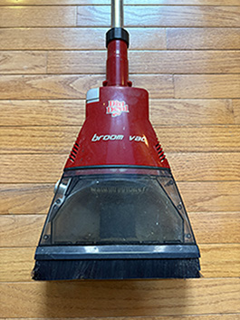

Dirt Devil MBV2030: Compact and Efficient for its Time
Front View of the Dirt Devil MBV2030 in Red
By Raghav Goel • Published on March 29, 2025
The Dirt Devil MBV2030 was a compact, stylish looking vacuum back in the early 2000s. Released in 2007, it has been a little more than a decade since its release and was made up of both a broom and vacuum for easy use. Although outclassed by more advanced vacuums today, 15 years ago, this vacuum was not only portable but powerful as well, serving as memorabilia for engineers and vacuum enthusiasts today.
When I used this vacuum years ago as a kid, I still remember how extremely easy it was to use considering it was just a light, portable, broom and vacuum. However, if for any reason you are unsure about any part of the vacuum, it does come with a manual. It had only one mode of cleaning so there wasn’t many cleaning modes compared to the several different modes that you would find in vacuums today. However, due it only having one mode of suction, to turn it on and off all you had to do was just press the power button and this made operating the vacuum and cleaning easy for all ages. The broom vac included replaceable brush heads, so it wasn’t a short-term use product which I liked. I also found it very easy to pick up debris with this vacuum without having to bend over.
The battery life wasn’t too impressive as I only averaged around 4 to 5 hours of use. Compared to electric Dyson vacuums, the broom vac would not stand a chance. However, given this is battery powered was a huge plus since a lot of vacuums today are still powered by cords. Considering its battery run time, it would be best to fully charge it after every use and I found that if I was using it for a big cleanup, it would be efficient to pile up debris before suctioning. Like a traditional broom, the broom vac is only designed to be used on hard, flat surfaces, like a traditional broom. As a result, this did a poor job picking up dirt and debris when I tested it on the carpet.
Maintaining the broom vac was extremely simple and straightforward. The filter would typically need to be cleaned once a month and left to dry for a day before use. The dirt cup in the broom vac would need to be regularly emptied, preferably after each cleaning cycle to ensure maximum performance. The separator was also needed to be cleaned every time for optimal performance.
After years of use, I found the broom vac to be a very efficient a lightweight machine. It’s great for quick clean ups on hard surfaces and is very easy and comfortable to hold. It’s compact structure, ease of use, and straightforward maintenance make it a great product for everyday use. Although it does not stand much of a chance against modern vacuums today. This product was nothing to look down upon 15 years ago. If you are someone looking for an old item that can get a boring chore done than you can count on the Dirt Devil MBV2030.
- Rating: ★★★
- Brand: Dirt Devil
- Model: MBV2030
- Year Released: 2007
- Type: Battery-powered broom vacuum
- Battery Life: 4-5 hours
- Best For: Hard, flat surfaces
- Features: Lightweight, replaceable brush heads, easy maintenance